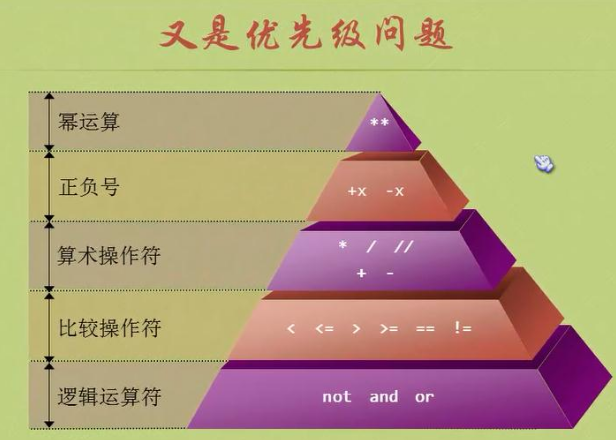

运算符
标准算数运算符
+：加
- ：减
*：乘
/：除
//：地板除，运算结果只保留整数部分，就是运算一个数值是另一个数值的多少倍
%：取余，余数是介于0到除数之间
**：幂运算，也可调用内置函数pow()来进行幂运算
>>> 1 + 1
2
>>> 3 - 1
2
>>> 5.0 * 6
30.0
>>>
>>> 5.0 / 6
0.8333333333333334
>>> 5.0 / 5
1.0
>>> 9 // 4
2
>>> 9 // -4
-3
>>> 9 % -4
-3
>>> 2 ** 2
4
>>> -2 ** 2
-4
>>> pow(2, 2)
4
>>> pow(-2, 2)
4
a += b --> a = a + b
a -= b --> a = a - b
a *= b --> a = a * b
a /= b --> a = a / b
...
...
逻辑运算符（布尔运算符）
and：逻辑与
or：逻辑或
not：逻辑非
比较运算符
>
<
==：用于比较两个运算数时候相等，“相等性测试”
>=
<=
!=
is：比较两个运算数是否是同一个对象，“同一性测试”
is not
可变类型的is比较
>>> a = b = [1, 2, 3]
>>> c = [1, 2, 3]
>>>
>>> id(a)
140032055835656
>>> id(b)
140032055835656
>>> id(c)
140032060966088
>>>
>>> a == b
True
>>> a == c
True
>>> a is b
True
>>> a is c
False
不可变类型的is比较
对于不可变类型的对象，其内存可能被重用，比如数值较小的整数对象
>>> a = 10
>>> b = 10
>>> id(a)
139944117569408
>>> id(b)
139944117569408
>>> a is b
True
>>>
>>>
>>> c = 111111111111111111111
>>> d = 111111111111111111111
>>> id(c)
139944118708864
>>> id(d)
139944118708904
>>> c is d
False
>>>
链式比较，并不是从左到右依次比较，而是两两比较进行与运算
>>> 3 > 2 > 1
True
>>> 3 > 2 and 2 > 1
True
>>> 6 > 4 is True ##等价于6 > 4 and 4 is True，结果为False
False
>>> 6 > 4 and 4 is True
False
>>> (6 > 4) is True
True
运算符的优先级
先乘除，后加减，有括号先算括号

赋值运算符=
多个变量同事赋值，赋值运算符的左边可以是一个所有元素都为变量的元组或列表，从而一次给多个变量同事赋值
>>> a, b = 1, 2
>>> print(a, b)
1 2
>>> a, b = [3, 4]
>>> print(a, b)
3 4
>>> a, b = b, a
>>> print(a, b)
4 3
赋值运算符左右两边的元素个数必须是相同的，否则会抛出ValueError
>>> a, b = 1, 2, 3
Traceback (most recent call last):
File "<stdin>", line 1, in <module>
ValueError: too many values to unpack (expected 2)
可以在赋值运算符左边的某个变量前添加*，以匹配赋值运算符右边的0个或多个元素。
>>> a, *b, c = 1, 2, 3, 4
>>> print(a, b, c)
1 [2, 3] 4
>>> *a, b, c = 1, 2, 3, 4
>>> print(a, b, c)
[1, 2] 3 4
>>> a, b, *c = 1, 2, 3, 4
>>> print(a, b, c)
1 2 [3, 4]
>>> *a, b, c = 1, 2
>>> print(a, b, c)
[] 1 2
>>> a, *b, c = 1, 2
>>> print(a, b, c)
1 [] 2
>>> a, b, *c = 1, 2
>>> print(a, b, c)
1 2 []